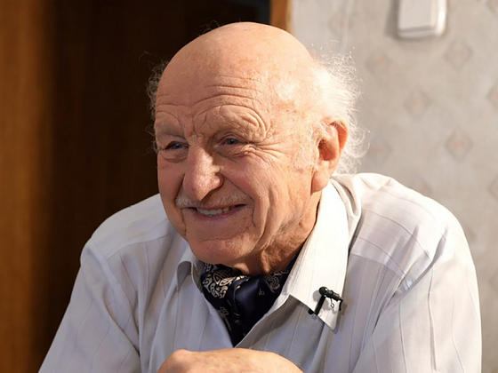

 Владимир Александрович Орлов Vladimir Alexandrovich Orlov Уладзімір Аляксандравіч Арлоў
(6 января 1938) — белорусский кинорежиссер, сценарист, писатель. (January 6 1938) — Belorussian director, screen-writer, writer. (6 студзеня 1938) — беларускі кінарэжысёр, сцэнарыст, пісьменнік.
1956 — 1959
Работал на киностудии "Беларусьфильм": помощник, ассистент режиссера, режиссер-практикант
Worked at "Belarusfilm" as director-assistant, trainee-director
Працаваў на кінастудыі «Беларусьфільм»: памочнік, асістэнт рэжысера, рэжысер-практыкант
1963
Окончил Белорусский государственный театрально-художественный институт (первый выпуск режиссерского факультета)
Graduated from the Belarusian State Theater and Art Institute
Скончыў Беларускі дзяржаўны тэатральна-мастацкі інстытут
1965 — 2000
Работал на Гостелерадио БССР
Worked at State Television and Radio of BSSR
Працаваў на Дзяржтэлерадые БССР
Список работ: List of Works: Списак работ:
- 1967 Праздничный альбом (сценарист) Holiday album (screen-writer) Святочны альбом (сцэнарыст)
- 1969 Родом отсюда (режиссер) Сome from here (director) Родам адсюль (рэжысер)
- 1971 Песняры Pesniary Песняры
- 1975 Субботы с дядькой Моничем Saturdays with Uncle Monich Суботы з дзядзькам Монічам
- 1977 Верасы Verasy Верасы
- 1979 Красный велосипед (сценарист) Red Bike (screen-writer) Чырвоны ровар (сцэнарыст)
- 1980 Испекли мы каравай (режиссер) We baked loaf (director) Спяклі мы каравай (рэжысёр)
- 1983 А также цирк (режисер) Decameron Дэкамерон
- 1984 Поединок (режиссер) And also a circus (director) А таксама цырк (рэжысэр)
- 1986 Легкий хлеб (режиссер) Light Bread (director) Лёгкі хлеб (рэжысёр)
- 1989 Записки Самсона Самосуя (режиссер) Notes of Samson Samosui (director) Запіскі Самсона Самосуя (рэжысёр)
- 1991 Хэппи энд (режиссер, сценарист) Happy End (director, screen-writer) Хэпі энд (рэжысёр, сцэнарыст)
- 1997 Сеанс мой вечерний (режиссер, сценарист) My evening session (director, screen-writer) Сеанс мой вячэрні (рэжысёр, сцэнарыст)
- 1998 Проклятый уютный дом (режиссер) Cursed cozy house (director) Пракляты ўтульны дом (рэжысёр)
{kind=link}
{kind=link}
{kind=link}
{kind=link}
{kind=link}
{kind=link}
{kind=link}